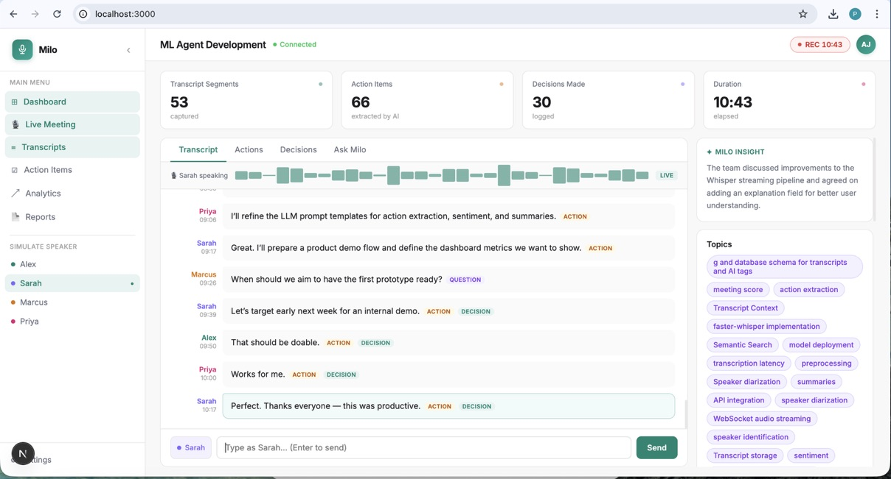
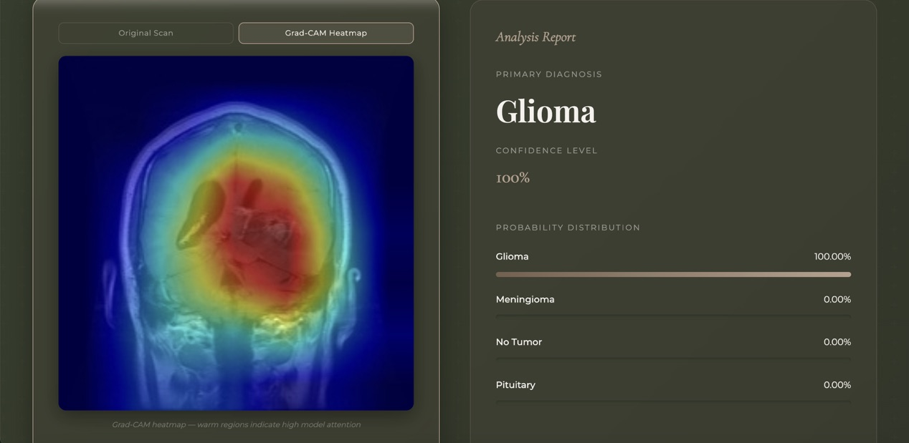
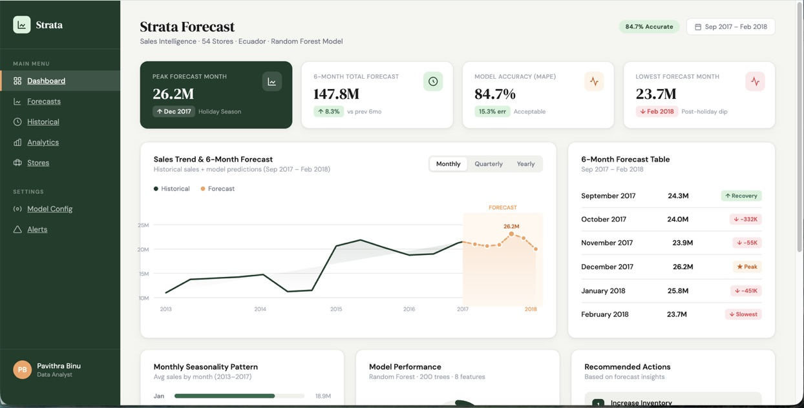
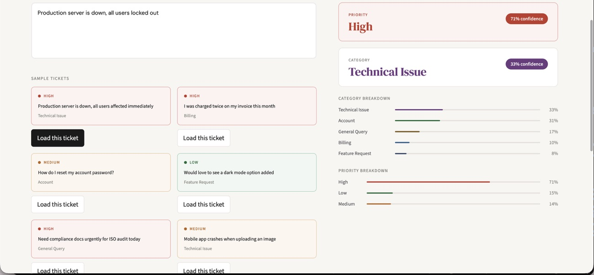
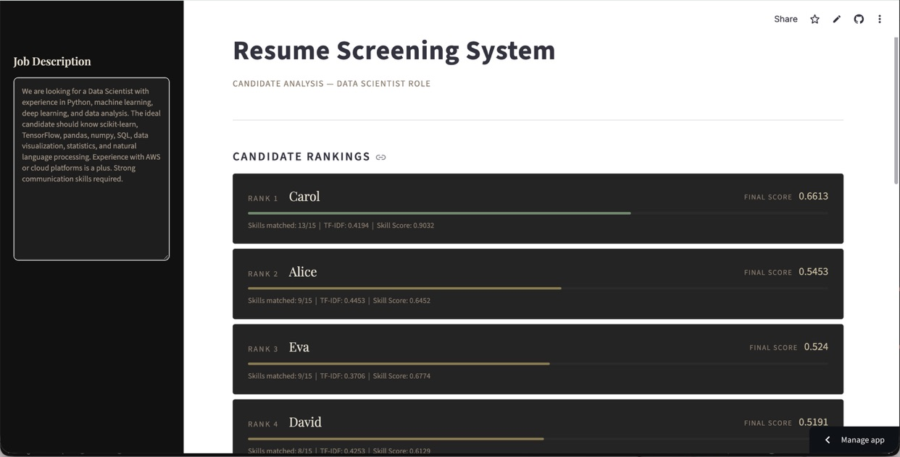
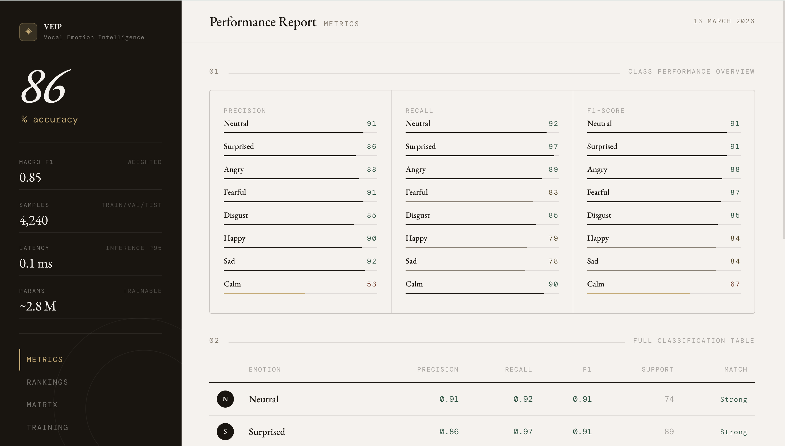

AI/ML Engineer · UI/UX Designer · Computer Science
Pavithra Binu — 2026
AI/ML Engineer & UI/UX Designer
Computer Science undergraduate and active ML Intern across two concurrent roles, building production-grade deep learning systems and user-centered interfaces from the ground up.
I engineer intelligent systems at the intersection of machine learning and human-centered design. My work spans the full model lifecycle — from data preprocessing and feature engineering through architecture selection, training, evaluation, and deployment — as well as the design systems that make those systems accessible and usable.
Currently contributing to industry-grade ML pipelines as an active intern at two organisations simultaneously, while completing my BSc in Computer Science. My technical stack covers PyTorch, TensorFlow, Scikit-learn, FastAPI, and React, complemented by deep experience in Figma-driven UX design and responsive front-end development.

Production-grade AI meeting intelligence system delivering live transcription and structured insight extraction — action items, decisions, discussion threads, and per-speaker sentiment — via a LLaMA-based LLM inference pipeline. Engineered a low-latency streaming architecture with FastAPI WebSockets and PostgreSQL, exposing a Next.js analytics dashboard for live transcript review.
~400ms end-to-end inference latency per audio segment
Medical imaging classifier conducting a rigorous backbone comparison — EfficientNet, ResNet-50, and Vision Transformer — using PyTorch transfer learning on multi-class MRI datasets. Integrated Grad-CAM saliency visualisation to surface clinically interpretable activation heatmaps, and packaged the model as an end-to-end deployable Gradio inference interface.
97% test accuracy · 0.97–0.99 macro AUC-ROC across all classes
End-to-end ML forecasting platform engineered to process 3M+ historical retail transactions across 54 stores, generating product-level 6-month demand projections. Feature engineering incorporated lagged sales signals, rolling statistics, and seasonality decomposition. Serialised model artifacts support live deployment, and an interactive analytics dashboard surfaces trend and anomaly insights for business stakeholders.
84.7% prediction accuracy · MAPE 15.3% · 3M+ records processed
Production NLP system eliminating manual support ticket triage via dual-output text classification: concurrent category prediction and urgency-based priority routing. Implemented a TF-IDF vectorisation pipeline with text preprocessing (tokenisation, stopword removal, lemmatisation) and dual Logistic Regression heads. Benchmarked against Random Forest, Naive Bayes, and LinearSVC via 5-fold stratified cross-validation; deployed as an interactive Streamlit application with live inference and confidence scoring.
100% accuracy · F1-score 1.0 on held-out test set of 2,000 annotated tickets
NLP-driven candidate screening system replacing manual CV review with a deterministic two-signal composite scoring model. Signal one computes TF-IDF cosine similarity between parsed resume text and a target job description. Signal two applies a weighted skill matching function, where core competencies contribute disproportionately to the final score (Final Score = 0.5 × TF-IDF + 0.5 × Weighted Skill Score). Outputs a ranked candidate leaderboard, per-candidate skill gap analysis, and supports both PDF and plain-text ingestion via an interactive Streamlit dashboard.
2-signal composite scoring · PDF & TXT ingestion · Skill gap analysis per candidate
Deep learning pipeline for paralinguistic emotion classification from raw audio, employing a hybrid CNN-BiLSTM architecture augmented with multi-head attention. The CNN layers extract local spectro-temporal features from MFCCs; the BiLSTM captures long-range temporal dependencies; and the attention mechanism dynamically weights emotionally salient time steps. Trained to convergence over 69 epochs with early stopping across 8 emotion classes on the RAVDESS and TESS benchmark corpora.
| Metric | Score | Metric | Score |
|---|---|---|---|
| Test Accuracy | 86.01% | Macro F1 | 0.85 |
| Val Accuracy | 82.55% | Train/Val Gap | ~6.5% |
LinkedIn Learning · 2026
LinkedIn Learning · 2026
Dubai Future Foundation · 2026
LinkedIn Learning · 2026
LinkedIn Learning · 2026
LinkedIn Learning · 2026
LinkedIn Learning · 2026
LinkedIn Learning · 2026
LinkedIn Learning · 2026
LinkedIn Learning · 2026
LinkedIn Learning · 2026
LinkedIn Learning · 2026
Open to AI/ML engineering roles, research collaborations, UI/UX design projects, and internship opportunities. Let's build something impactful together.